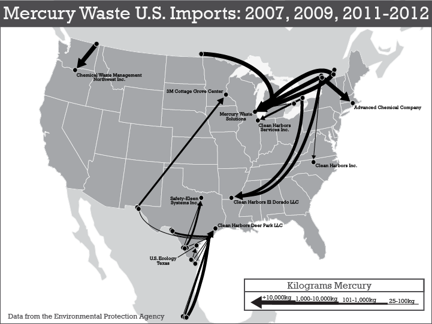

United States Sites that Imported Mercury Hazardous Waste
Mercury waste is a known human hazard and has appeared in numerous records in our dataset. The flow map below shows mercury waste imports to the United States from Canada and Mexico in 2007, 2009, and 2011-2012. To create this map we used origin and destination coordinates from our assembled dataset for records filtered to those having mercury in the hazardous waste description. Flow lines were drawn on the map, showing connections between exporting facilities and importing facilities, sized based on the amount of waste transferred. As seen on the map, mercury waste is transported to many different places in the United States from many different places in Canada and Mexico, and amounts varied by shipment. It is important to note that mercury waste wasn’t just transported to the nearest state across the border. There were multiple instances where the mercury waste traveled across many states before it reached its destination.